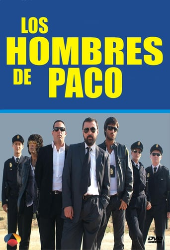

Biografia
Dani Martín nació en Madrid el 19 de febrero de 1977. Se crio con sus padres y su hermana en Alalpardo,2 a las afueras de Madrid. Desde pequeño le gustaba imitar a sus artistas favoritos en el salón de su casa, lo que le llevó a soñar con formar su propio grupo algún día. Consciente de que el instituto no le atraía, comenzó a trabajar con su padre a la vez que desarrollaba sus estudios de Arte Dramático en la escuela de Cristina Rota, quien le facilitó sus primeros trabajos como actor teatral y cómico. Más tarde, decidiría cambiar de escuela, entrando en la de William Layton. A partir del momento en que terminó su formación, Dani Martín comienza a aparecer en diversos papeles como actor, tanto en cine como en televisión. Su primera aparición en televisión fue como botones en un especial de Nochevieja junto a Martes y Trece. Posteriormente, presentó el programa musical Ponte las pilas y también ha aparecido en algunos capítulos de series destacadas, como Al salir de clase, El comisario, Hospital central, 7 vidas, Raquel busca su sitio, Cuenta atrás o Los hombres de Paco, entre otras muchas apariciones. Mientras hacía papeles diversos en cine y televisión, comenzó a trabajar como repartidor de pedidos ya que, como él mismo ha confesado, le encantaba conducir, así como la libertad que ese trabajo le concedía al permitirle estar en la calle todo el día escuchando y cantando la música que le gustaba: los Pistones, Hombres G, los Nikis...3 A partir del año 1999, Dani Martín lidera una banda llamada El canto del Loco, con los que publica varios discos destacados y cosecha muchos éxitos.En septiembre de 2009, El Canto del Loco decide separarse, por lo que Dani Martín comienza su carrera musical en solitario. En agosto de 2010, Dani Martín publica el primer sencillo de su primer álbum como solista. El sencillo se llamó "16 Añitos" y el álbum "Pequeño". En 2013, saca su segundo álbum: Dani Martín.

Carrera musical
En el año 1999 crea el grupo musical El Canto del Loco junto a Iván Ganchegui, David Otero, su primo, Jandro Velázquez y Chema Ruiz. Influidos principalmente por otros grupos españoles de la década de 1980 y con cinco álbumes de estudio, El Canto del Loco consiguió vender durante sus quince años de vida más de un millón de copias de sus discos,4 convirtiéndose en uno de los grupos musicales más importantes del panorama español de la época.567 En septiembre de 2009, El Canto del Loco decide separarse para centrarse en las carreras en solitario de cada miembro del grupo. El 25 de agosto de 2010, Dani Martín publicó su primer sencillo en solitario «16 añitos» y en el 26 de octubre de 2010 lanza al mercado su primer disco en solitario, Pequeño. Dos de las canciones ("Mi lamento" y "El cielo de los perros") están dedicadas a su hermana, fallecida en 2009 a los 34 años por un infarto cerebral. El 26 de octubre de 2010, gana en los premios 40 Principales el premio al mejor artista solista y es nominado a mejor videoclip por la canción "16 Añitos". El 22 de noviembre de 2010 emprendió su primera gira en solitario con su álbum Pequeño en Madrid. En 2012, grabó junto a Miguel Bosé la canción Te digo amor (original del álbum Sereno de Bosé) para Papitwo, el nuevo álbum de duetos de Bosé, lanzado el 4 de septiembre. En este mismo año, también grabó un dueto junto a Tony Bennett, la canción Are you having any fun? formó parte del disco del norteamericano Viva Duets donde el artista se marca dúos con lo más granado de la canción latina. En Mayo de 2013, anuncio a través de Twitter y de su web oficial que su nuevo single iba a llamarse Cero y que saldría a la venta a partir del 3 de junio en ITunes y en todas las tiendas de discos digitales españoles. El 17 de septiembre de 2013 salió a la venta su segundo disco en solitario, llamado "Dani Martín". En este mismo año, el 25 de octubre comenzó una gira de 12 conciertos en España. En 2014 hizo una gira de muchos más conciertos, en los que gran parte de ellos agotó totalmente las entradas. Dos conciertos de esta gira (22 y 23 de mayo en el Palacio de los Deportes de Madrid) fueron grabados y el 14 de octubre de 2014 salió a la venta el álbum en directo titulado "mi teatro", que incluye también el DVD del concierto con artistas invitados como Alejandro Sanz, Joaquin Sabina, Serrat, Leiva y el argentino Axel. En septiembre y octubre de 2015 realizó una gira de dos únicos conciertos en España titulada "La Cuerda Floja", llenando Las Ventas y el Pabellón Olímpico de Badalona para así celebrar sus 15 años en el mundo de la música. Leiva, Sidecars y Estopa fueron los artistas invitados para acompañarle en dichos eventos. En 2017, el día 4 de febrero, comienza la Gira La Montaña Rusa . Consta de 25 conciertos, cuyas entradas se agotaron en la mayoría de los casos. La aventura arranca en Gijón, sigue en Zaragoza y le lleva por Vigo, Santander, San Sebastián, Pamplona, Bilbao, Cáceres, Vitoria, Valladolid, Sevilla, Granada, Murcia, Roquetas de Mar, Alicante, Valencia, Palma de Mallorca, Las Palmas de Gran Canaria, Tenerife, Cádiz y Málaga, hasta finales de mayo. A continuación, en junio, comenzará una gira por Colombia, Perú y México. A su regreso, actuará en Marbella en agosto, en Córdoba y Mérida en septiembre, en A Coruña, Logroño, Salamanca y Jerez en octubre, en Madrid (en cinco ocasiones), Castellón y Albacete en noviembre y por último, en Barcelona, en diciembre, según sus conciertos confirmados a 7 de febrero de 2017.
Carrera interpretativa
Desde el año 2000, Dani Martín compagina su labor al frente de El Canto del Loco, con sus incursiones en cine y televisión. A partir de su formación como actor, Dani Martín ha desarrollado numerosos trabajos como actor de cine, entre los que se incluyen su papel protagonista en Sirenas de Fernando León de Aranoa, Sin vergüenza de Joaquín Oristrell, Sinfín de Carlos Villaverde y Manuel Sanabria, Yo soy la Juani de Bigas Luna, o su pequeña intervención en la película Los abrazos rotos, dirigida por Pedro Almodóvar. También cabe añadir su participación como actor teatral en las obras Historias en Blues y Cachorros, en series de televisión como Cuenta atrás , Al salir de clase, Policías, Raquel busca su sitio, Petra Delicado, Siete vidas, Hospital Central o Los hombres de Paco. Entre 2007 y 2008 protagonizó una serie para la cadena de televisión Cuatro llamada Cuenta atrás, en la que interpretaba al impulsivo inspector jefe de policía Pablo Corso. Contuvo dos temporadas .
